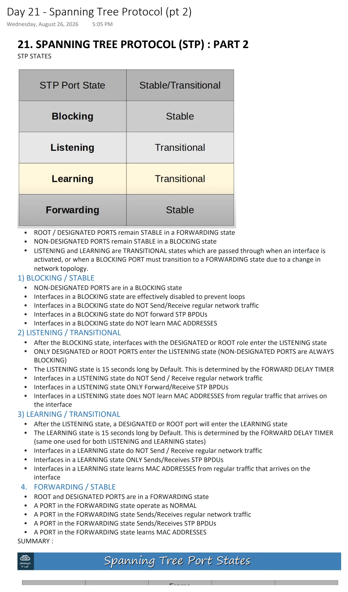
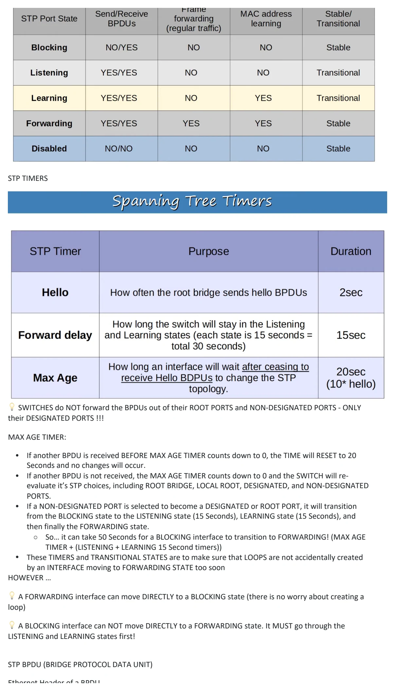
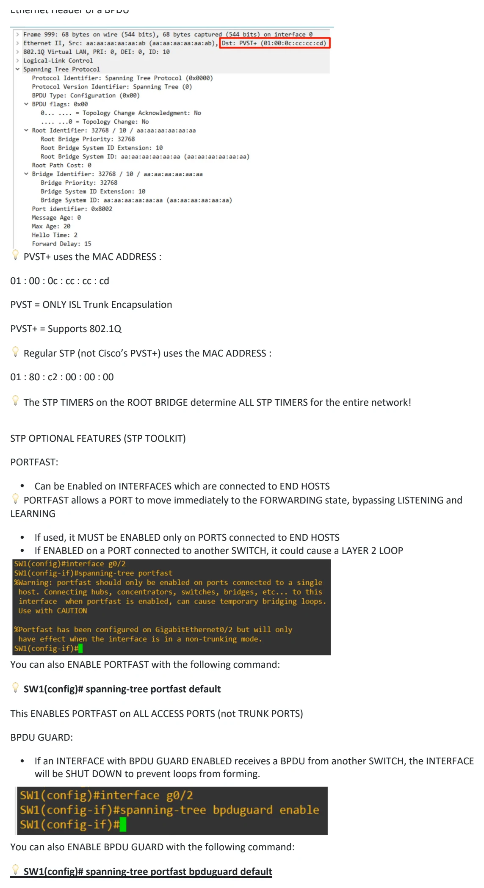
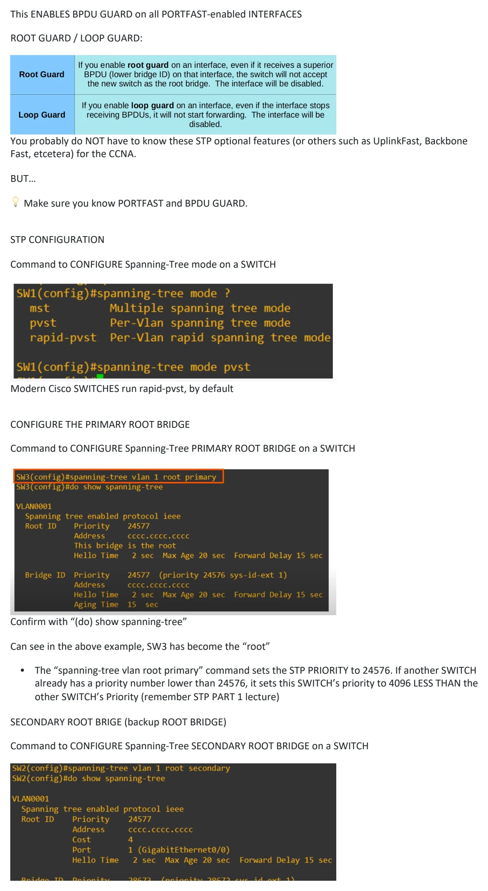
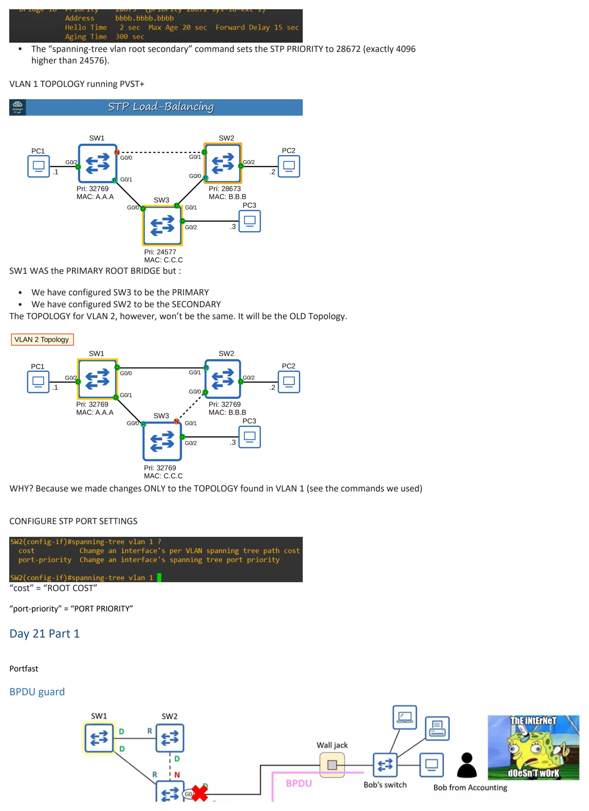
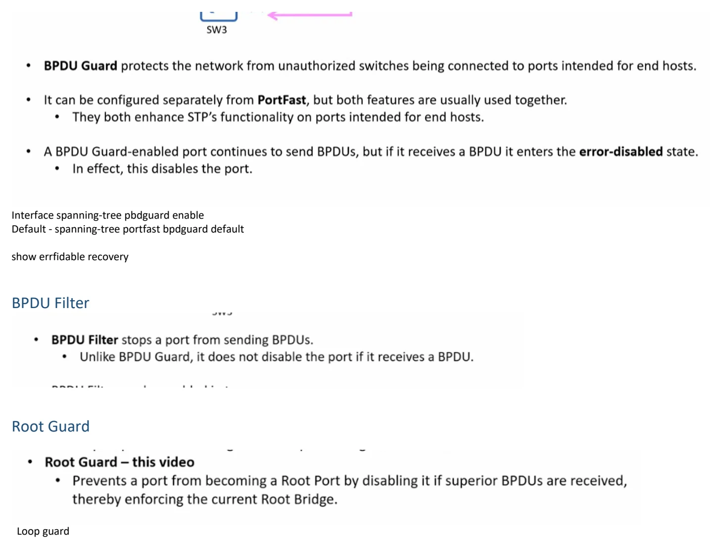

Spanning Tree Protocol (pt 2)
Download original PDF





Text view — Spanning Tree Protocol (pt 2)
Extracted from the original export. Diagrams and some formatting appear in the notes above.
Day 21 - Spanning Tree Protocol (pt 2) Wednesday, August 26, 2026 5:05 PM 21. SPANNING TREE PROTOCOL (STP) : PART 2 STP STATES • ROOT / DESIGNATED PORTS remain STABLE in a FORWARDING state • NON-DESIGNATED PORTS remain STABLE in a BLOCKING state • LISTENING and LEARNING are TRANSITIONAL states which are passed through when an interface is activated, or when a BLOCKING PORT must transition to a FORWARDING state due to a change in network topology. 1) BLOCKING / STABLE • NON-DESIGNATED PORTS are in a BLOCKING state • Interfaces in a BLOCKING state are effectively disabled to prevent loops • Interfaces in a BLOCKING state do NOT Send/Receive regular network traffic • Interfaces in a BLOCKING state do NOT forward STP BPDUs • Interfaces in a BLOCKING state do NOT learn MAC ADDRESSES 2) LISTENING / TRANSITIONAL • After the BLOCKING state, interfaces with the DESIGNATED or ROOT role enter the LISTENING state • ONLY DESIGNATED or ROOT PORTS enter the LISTENING state (NON-DESIGNATED PORTS are ALWAYS BLOCKING) • The LISTENING state is 15 seconds long by Default. This is determined by the FORWARD DELAY TIMER • Interfaces in a LISTENING state do NOT Send / Receive regular network traffic • Interfaces in a LISTENING state ONLY Forward/Receive STP BPDUs • Interfaces in a LISTENING state does NOT learn MAC ADDRESSES from regular traffic that arrives on the interface 3) LEARNING / TRANSITIONAL • After the LISTENING state, a DESIGNATED or ROOT port will enter the LEARNING state • The LEARNING state is 15 seconds long by Default. This is determined by the FORWARD DELAY TIMER (same one used for both LISTENING and LEARNING states) • Interfaces in a LEARNING state do NOT Send / Receive regular network traffic • Interfaces in a LEARNING state ONLY Sends/Receives STP BPDUs • Interfaces in a LEARNING state learns MAC ADDRESSES from regular traffic that arrives on the interface 4. FORWARDING / STABLE • ROOT and DESIGNATED PORTS are in a FORWARDING state • A PORT in the FORWARDING state operate as NORMAL • A PORT in the FORWARDING state Sends/Receives regular network traffic • A PORT in the FORWARDING state Sends/Receives STP BPDUs • A PORT in the FORWARDING state learns MAC ADDRESSES SUMMARY : STP TIMERS 💡 SWITCHES do NOT forward the BPDUs out of their ROOT PORTS and NON-DESIGNATED PORTS - ONLY their DESIGNATED PORTS !!! MAX AGE TIMER: • If another BPDU is received BEFORE MAX AGE TIMER counts down to 0, the TIME will RESET to 20 Seconds and no changes will occur. • If another BPDU is not received, the MAX AGE TIMER counts down to 0 and the SWITCH will re- evaluate it’s STP choices, including ROOT BRIDGE, LOCAL ROOT, DESIGNATED, and NON-DESIGNATED PORTS. • If a NON-DESIGNATED PORT is selected to become a DESIGNATED or ROOT PORT, it will transition from the BLOCKING state to the LISTENING state (15 Seconds), LEARNING state (15 Seconds), and then finally the FORWARDING state. ○ So… it can take 50 Seconds for a BLOCKING interface to transition to FORWARDING! (MAX AGE TIMER + (LISTENING + LEARNING 15 Second timers)) • These TIMERS and TRANSITIONAL STATES are to make sure that LOOPS are not accidentally created by an INTERFACE moving to FORWARDING STATE too soon HOWEVER … 💡 A FORWARDING interface can move DIRECTLY to a BLOCKING state (there is no worry about creating a loop) 💡 A BLOCKING interface can NOT move DIRECTLY to a FORWARDING state. It MUST go through the LISTENING and LEARNING states first! STP BPDU (BRIDGE PROTOCOL DATA UNIT) Ethernet Header of a BPDU 💡 PVST+ uses the MAC ADDRESS : 01 : 00 : 0c : cc : cc : cd PVST = ONLY ISL Trunk Encapsulation PVST+ = Supports 802.1Q 💡 Regular STP (not Cisco’s PVST+) uses the MAC ADDRESS : 01 : 80 : c2 : 00 : 00 : 00 💡 The STP TIMERS on the ROOT BRIDGE determine ALL STP TIMERS for the entire network! STP OPTIONAL FEATURES (STP TOOLKIT) PORTFAST: • Can be Enabled on INTERFACES which are connected to END HOSTS 💡 PORTFAST allows a PORT to move immediately to the FORWARDING state, bypassing LISTENING and LEARNING • If used, it MUST be ENABLED only on PORTS connected to END HOSTS • If ENABLED on a PORT connected to another SWITCH, it could cause a LAYER 2 LOOP You can also ENABLE PORTFAST with the following command: 💡 SW1(config)# spanning-tree portfast default This ENABLES PORTFAST on ALL ACCESS PORTS (not TRUNK PORTS) BPDU GUARD: • If an INTERFACE with BPDU GUARD ENABLED receives a BPDU from another SWITCH, the INTERFACE will be SHUT DOWN to prevent loops from forming. You can also ENABLE BPDU GUARD with the following command: 💡 SW1(config)# spanning-tree portfast bpduguard default This ENABLES BPDU GUARD on all PORTFAST-enabled INTERFACES ROOT GUARD / LOOP GUARD: You probably do NOT have to know these STP optional features (or others such as UplinkFast, Backbone Fast, etcetera) for the CCNA. BUT… 💡 Make sure you know PORTFAST and BPDU GUARD. STP CONFIGURATION Command to CONFIGURE Spanning-Tree mode on a SWITCH Modern Cisco SWITCHES run rapid-pvst, by default CONFIGURE THE PRIMARY ROOT BRIDGE Command to CONFIGURE Spanning-Tree PRIMARY ROOT BRIDGE on a SWITCH Confirm with “(do) show spanning-tree” Can see in the above example, SW3 has become the “root” • The “spanning-tree vlan root primary” command sets the STP PRIORITY to 24576. If another SWITCH already has a priority number lower than 24576, it sets this SWITCH’s priority to 4096 LESS THAN the other SWITCH’s Priority (remember STP PART 1 lecture) SECONDARY ROOT BRIGE (backup ROOT BRIDGE) Command to CONFIGURE Spanning-Tree SECONDARY ROOT BRIDGE on a SWITCH • The “spanning-tree vlan root secondary” command sets the STP PRIORITY to 28672 (exactly 4096 higher than 24576). VLAN 1 TOPOLOGY running PVST+ SW1 WAS the PRIMARY ROOT BRIDGE but : • We have configured SW3 to be the PRIMARY • We have configured SW2 to be the SECONDARY The TOPOLOGY for VLAN 2, however, won’t be the same. It will be the OLD Topology. WHY? Because we made changes ONLY to the TOPOLOGY found in VLAN 1 (see the commands we used) CONFIGURE STP PORT SETTINGS “cost” = “ROOT COST” “port-priority” = “PORT PRIORITY” Day 21 Part 1 Portfast BPDU guard Interface spanning-tree pbdguard enable Default - spanning-tree portfast bpdguard default show errfidable recovery BPDU Filter Root Guard Loop guard Day 21 - Spanning Tree Protocol (pt 2) Wednesday, August 26, 2026 5:05 PM 21. SPANNING TREE PROTOCOL (STP) : PART 2 STP STATES • ROOT / DESIGNATED PORTS remain STABLE in a FORWARDING state • NON-DESIGNATED PORTS remain STABLE in a BLOCKING state • LISTENING and LEARNING are TRANSITIONAL states which are passed through when an interface is activated, or when a BLOCKING PORT must transition to a FORWARDING state due to a change in network topology. 1) BLOCKING / STABLE • NON-DESIGNATED PORTS are in a BLOCKING state • Interfaces in a BLOCKING state are effectively disabled to prevent loops • Interfaces in a BLOCKING state do NOT Send/Receive regular network traffic • Interfaces in a BLOCKING state do NOT forward STP BPDUs • Interfaces in a BLOCKING state do NOT learn MAC ADDRESSES 2) LISTENING / TRANSITIONAL • After the BLOCKING state, interfaces with the DESIGNATED or ROOT role enter the LISTENING state • ONLY DESIGNATED or ROOT PORTS enter the LISTENING state (NON-DESIGNATED PORTS are ALWAYS BLOCKING) • The LISTENING state is 15 seconds long by Default. This is determined by the FORWARD DELAY TIMER • Interfaces in a LISTENING state do NOT Send / Receive regular network traffic • Interfaces in a LISTENING state ONLY Forward/Receive STP BPDUs • Interfaces in a LISTENING state does NOT learn MAC ADDRESSES from regular traffic that arrives on the interface 3) LEARNING / TRANSITIONAL • After the LISTENING state, a DESIGNATED or ROOT port will enter the LEARNING state • The LEARNING state is 15 seconds long by Default. This is determined by the FORWARD DELAY TIMER (same one used for both LISTENING and LEARNING states) • Interfaces in a LEARNING state do NOT Send / Receive regular network traffic • Interfaces in a LEARNING state ONLY Sends/Receives STP BPDUs • Interfaces in a LEARNING state learns MAC ADDRESSES from regular traffic that arrives on the interface 4. FORWARDING / STABLE • ROOT and DESIGNATED PORTS are in a FORWARDING state • A PORT in the FORWARDING state operate as NORMAL • A PORT in the FORWARDING state Sends/Receives regular network traffic • A PORT in the FORWARDING state Sends/Receives STP BPDUs • A PORT in the FORWARDING state learns MAC ADDRESSES SUMMARY : STP TIMERS 💡 SWITCHES do NOT forward the BPDUs out of their ROOT PORTS and NON-DESIGNATED PORTS - ONLY their DESIGNATED PORTS !!! MAX AGE TIMER: • If another BPDU is received BEFORE MAX AGE TIMER counts down to 0, the TIME will RESET to 20 Seconds and no changes will occur. • If another BPDU is not received, the MAX AGE TIMER counts down to 0 and the SWITCH will re- evaluate it’s STP choices, including ROOT BRIDGE, LOCAL ROOT, DESIGNATED, and NON-DESIGNATED PORTS. • If a NON-DESIGNATED PORT is selected to become a DESIGNATED or ROOT PORT, it will transition from the BLOCKING state to the LISTENING state (15 Seconds), LEARNING state (15 Seconds), and then finally the FORWARDING state. ○ So… it can take 50 Seconds for a BLOCKING interface to transition to FORWARDING! (MAX AGE TIMER + (LISTENING + LEARNING 15 Second timers)) • These TIMERS and TRANSITIONAL STATES are to make sure that LOOPS are not accidentally created by an INTERFACE moving to FORWARDING STATE too soon HOWEVER … 💡 A FORWARDING interface can move DIRECTLY to a BLOCKING state (there is no worry about creating a loop) 💡 A BLOCKING interface can NOT move DIRECTLY to a FORWARDING state. It MUST go through the LISTENING and LEARNING states first! STP BPDU (BRIDGE PROTOCOL DATA UNIT) Ethernet Header of a BPDU 💡 PVST+ uses the MAC ADDRESS : 01 : 00 : 0c : cc : cc : cd PVST = ONLY ISL Trunk Encapsulation PVST+ = Supports 802.1Q 💡 Regular STP (not Cisco’s PVST+) uses the MAC ADDRESS : 01 : 80 : c2 : 00 : 00 : 00 💡 The STP TIMERS on the ROOT BRIDGE determine ALL STP TIMERS for the entire network! STP OPTIONAL FEATURES (STP TOOLKIT) PORTFAST: • Can be Enabled on INTERFACES which are connected to END HOSTS 💡 PORTFAST allows a PORT to move immediately to the FORWARDING state, bypassing LISTENING and LEARNING • If used, it MUST be ENABLED only on PORTS connected to END HOSTS • If ENABLED on a PORT connected to another SWITCH, it could cause a LAYER 2 LOOP You can also ENABLE PORTFAST with the following command: 💡 SW1(config)# spanning-tree portfast default This ENABLES PORTFAST on ALL ACCESS PORTS (not TRUNK PORTS) BPDU GUARD: • If an INTERFACE with BPDU GUARD ENABLED receives a BPDU from another SWITCH, the INTERFACE will be SHUT DOWN to prevent loops from forming. You can also ENABLE BPDU GUARD with the following command: 💡 SW1(config)# spanning-tree portfast bpduguard default This ENABLES BPDU GUARD on all PORTFAST-enabled INTERFACES ROOT GUARD / LOOP GUARD: You probably do NOT have to know these STP optional features (or others such as UplinkFast, Backbone Fast, etcetera) for the CCNA. BUT… 💡 Make sure you know PORTFAST and BPDU GUARD. STP CONFIGURATION Command to CONFIGURE Spanning-Tree mode on a SWITCH Modern Cisco SWITCHES run rapid-pvst, by default CONFIGURE THE PRIMARY ROOT BRIDGE Command to CONFIGURE Spanning-Tree PRIMARY ROOT BRIDGE on a SWITCH Confirm with “(do) show spanning-tree” Can see in the above example, SW3 has become the “root” • The “spanning-tree vlan root primary” command sets the STP PRIORITY to 24576. If another SWITCH already has a priority number lower than 24576, it sets this SWITCH’s priority to 4096 LESS THAN the other SWITCH’s Priority (remember STP PART 1 lecture) SECONDARY ROOT BRIGE (backup ROOT BRIDGE) Command to CONFIGURE Spanning-Tree SECONDARY ROOT BRIDGE on a SWITCH • The “spanning-tree vlan root secondary” command sets the STP PRIORITY to 28672 (exactly 4096 higher than 24576). VLAN 1 TOPOLOGY running PVST+ SW1 WAS the PRIMARY ROOT BRIDGE but : • We have configured SW3 to be the PRIMARY • We have configured SW2 to be the SECONDARY The TOPOLOGY for VLAN 2, however, won’t be the same. It will be the OLD Topology. WHY? Because we made changes ONLY to the TOPOLOGY found in VLAN 1 (see the commands we used) CONFIGURE STP PORT SETTINGS “cost” = “ROOT COST” “port-priority” = “PORT PRIORITY” Day 21 Part 1 Portfast BPDU guard Interface spanning-tree pbdguard enable Default - spanning-tree portfast bpdguard default show errfidable recovery BPDU Filter Root Guard Loop guard Day 21 - Spanning Tree Protocol (pt 2) Wednesday, August 26, 2026 5:05 PM 21. SPANNING TREE PROTOCOL (STP) : PART 2 STP STATES • ROOT / DESIGNATED PORTS remain STABLE in a FORWARDING state • NON-DESIGNATED PORTS remain STABLE in a BLOCKING state • LISTENING and LEARNING are TRANSITIONAL states which are passed through when an interface is activated, or when a BLOCKING PORT must transition to a FORWARDING state due to a change in network topology. 1) BLOCKING / STABLE • NON-DESIGNATED PORTS are in a BLOCKING state • Interfaces in a BLOCKING state are effectively disabled to prevent loops • Interfaces in a BLOCKING state do NOT Send/Receive regular network traffic • Interfaces in a BLOCKING state do NOT forward STP BPDUs • Interfaces in a BLOCKING state do NOT learn MAC ADDRESSES 2) LISTENING / TRANSITIONAL • After the BLOCKING state, interfaces with the DESIGNATED or ROOT role enter the LISTENING state • ONLY DESIGNATED or ROOT PORTS enter the LISTENING state (NON-DESIGNATED PORTS are ALWAYS BLOCKING) • The LISTENING state is 15 seconds long by Default. This is determined by the FORWARD DELAY TIMER • Interfaces in a LISTENING state do NOT Send / Receive regular network traffic • Interfaces in a LISTENING state ONLY Forward/Receive STP BPDUs • Interfaces in a LISTENING state does NOT learn MAC ADDRESSES from regular traffic that arrives on the interface 3) LEARNING / TRANSITIONAL • After the LISTENING state, a DESIGNATED or ROOT port will enter the LEARNING state • The LEARNING state is 15 seconds long by Default. This is determined by the FORWARD DELAY TIMER (same one used for both LISTENING and LEARNING states) • Interfaces in a LEARNING state do NOT Send / Receive regular network traffic • Interfaces in a LEARNING state ONLY Sends/Receives STP BPDUs • Interfaces in a LEARNING state learns MAC ADDRESSES from regular traffic that arrives on the interface 4. FORWARDING / STABLE • ROOT and DESIGNATED PORTS are in a FORWARDING state • A PORT in the FORWARDING state operate as NORMAL • A PORT in the FORWARDING state Sends/Receives regular network traffic • A PORT in the FORWARDING state Sends/Receives STP BPDUs • A PORT in the FORWARDING state learns MAC ADDRESSES SUMMARY : STP TIMERS 💡 SWITCHES do NOT forward the BPDUs out of their ROOT PORTS and NON-DESIGNATED PORTS - ONLY their DESIGNATED PORTS !!! MAX AGE TIMER: • If another BPDU is received BEFORE MAX AGE TIMER counts down to 0, the TIME will RESET to 20 Seconds and no changes will occur. • If another BPDU is not received, the MAX AGE TIMER counts down to 0 and the SWITCH will re- evaluate it’s STP choices, including ROOT BRIDGE, LOCAL ROOT, DESIGNATED, and NON-DESIGNATED PORTS. • If a NON-DESIGNATED PORT is selected to become a DESIGNATED or ROOT PORT, it will transition from the BLOCKING state to the LISTENING state (15 Seconds), LEARNING state (15 Seconds), and then finally the FORWARDING state. ○ So… it can take 50 Seconds for a BLOCKING interface to transition to FORWARDING! (MAX AGE TIMER + (LISTENING + LEARNING 15 Second timers)) • These TIMERS and TRANSITIONAL STATES are to make sure that LOOPS are not accidentally created by an INTERFACE moving to FORWARDING STATE too soon HOWEVER … 💡 A FORWARDING interface can move DIRECTLY to a BLOCKING state (there is no worry about creating a loop) 💡 A BLOCKING interface can NOT move DIRECTLY to a FORWARDING state. It MUST go through the LISTENING and LEARNING states first! STP BPDU (BRIDGE PROTOCOL DATA UNIT) Ethernet Header of a BPDU 💡 PVST+ uses the MAC ADDRESS : 01 : 00 : 0c : cc : cc : cd PVST = ONLY ISL Trunk Encapsulation PVST+ = Supports 802.1Q 💡 Regular STP (not Cisco’s PVST+) uses the MAC ADDRESS : 01 : 80 : c2 : 00 : 00 : 00 💡 The STP TIMERS on the ROOT BRIDGE determine ALL STP TIMERS for the entire network! STP OPTIONAL FEATURES (STP TOOLKIT) PORTFAST: • Can be Enabled on INTERFACES which are connected to END HOSTS 💡 PORTFAST allows a PORT to move immediately to the FORWARDING state, bypassing LISTENING and LEARNING • If used, it MUST be ENABLED only on PORTS connected to END HOSTS • If ENABLED on a PORT connected to another SWITCH, it could cause a LAYER 2 LOOP You can also ENABLE PORTFAST with the following command: 💡 SW1(config)# spanning-tree portfast default This ENABLES PORTFAST on ALL ACCESS PORTS (not TRUNK PORTS) BPDU GUARD: • If an INTERFACE with BPDU GUARD ENABLED receives a BPDU from another SWITCH, the INTERFACE will be SHUT DOWN to prevent loops from forming. You can also ENABLE BPDU GUARD with the following command: 💡 SW1(config)# spanning-tree portfast bpduguard default This ENABLES BPDU GUARD on all PORTFAST-enabled INTERFACES ROOT GUARD / LOOP GUARD: You probably do NOT have to know these STP optional features (or others such as UplinkFast, Backbone Fast, etcetera) for the CCNA. BUT… 💡 Make sure you know PORTFAST and BPDU GUARD. STP CONFIGURATION Command to CONFIGURE Spanning-Tree mode on a SWITCH Modern Cisco SWITCHES run rapid-pvst, by default CONFIGURE THE PRIMARY ROOT BRIDGE Command to CONFIGURE Spanning-Tree PRIMARY ROOT BRIDGE on a SWITCH Confirm with “(do) show spanning-tree” Can see in the above example, SW3 has become the “root” • The “spanning-tree vlan root primary” command sets the STP PRIORITY to 24576. If another SWITCH already has a priority number lower than 24576, it sets this SWITCH’s priority to 4096 LESS THAN the other SWITCH’s Priority (remember STP PART 1 lecture) SECONDARY ROOT BRIGE (backup ROOT BRIDGE) Command to CONFIGURE Spanning-Tree SECONDARY ROOT BRIDGE on a SWITCH • The “spanning-tree vlan root secondary” command sets the STP PRIORITY to 28672 (exactly 4096 higher than 24576). VLAN 1 TOPOLOGY running PVST+ SW1 WAS the PRIMARY ROOT BRIDGE but : • We have configured SW3 to be the PRIMARY • We have configured SW2 to be the SECONDARY The TOPOLOGY for VLAN 2, however, won’t be the same. It will be the OLD Topology. WHY? Because we made changes ONLY to the TOPOLOGY found in VLAN 1 (see the commands we used) CONFIGURE STP PORT SETTINGS “cost” = “ROOT COST” “port-priority” = “PORT PRIORITY” Day 21 Part 1 Portfast BPDU guard Interface spanning-tree pbdguard enable Default - spanning-tree portfast bpdguard default show errfidable recovery BPDU Filter Root Guard Loop guard Day 21 - Spanning Tree Protocol (pt 2) Wednesday, August 26, 2026 5:05 PM 21. SPANNING TREE PROTOCOL (STP) : PART 2 STP STATES • ROOT / DESIGNATED PORTS remain STABLE in a FORWARDING state • NON-DESIGNATED PORTS remain STABLE in a BLOCKING state • LISTENING and LEARNING are TRANSITIONAL states which are passed through when an interface is activated, or when a BLOCKING PORT must transition to a FORWARDING state due to a change in network topology. 1) BLOCKING / STABLE • NON-DESIGNATED PORTS are in a BLOCKING state • Interfaces in a BLOCKING state are effectively disabled to prevent loops • Interfaces in a BLOCKING state do NOT Send/Receive regular network traffic • Interfaces in a BLOCKING state do NOT forward STP BPDUs • Interfaces in a BLOCKING state do NOT learn MAC ADDRESSES 2) LISTENING / TRANSITIONAL • After the BLOCKING state, interfaces with the DESIGNATED or ROOT role enter the LISTENING state • ONLY DESIGNATED or ROOT PORTS enter the LISTENING state (NON-DESIGNATED PORTS are ALWAYS BLOCKING) • The LISTENING state is 15 seconds long by Default. This is determined by the FORWARD DELAY TIMER • Interfaces in a LISTENING state do NOT Send / Receive regular network traffic • Interfaces in a LISTENING state ONLY Forward/Receive STP BPDUs • Interfaces in a LISTENING state does NOT learn MAC ADDRESSES from regular traffic that arrives on the interface 3) LEARNING / TRANSITIONAL • After the LISTENING state, a DESIGNATED or ROOT port will enter the LEARNING state • The LEARNING state is 15 seconds long by Default. This is determined by the FORWARD DELAY TIMER (same one used for both LISTENING and LEARNING states) • Interfaces in a LEARNING state do NOT Send / Receive regular network traffic • Interfaces in a LEARNING state ONLY Sends/Receives STP BPDUs • Interfaces in a LEARNING state learns MAC ADDRESSES from regular traffic that arrives on the interface 4. FORWARDING / STABLE • ROOT and DESIGNATED PORTS are in a FORWARDING state • A PORT in the FORWARDING state operate as NORMAL • A PORT in the FORWARDING state Sends/Receives regular network traffic • A PORT in the FORWARDING state Sends/Receives STP BPDUs • A PORT in the FORWARDING state learns MAC ADDRESSES SUMMARY : STP TIMERS 💡 SWITCHES do NOT forward the BPDUs out of their ROOT PORTS and NON-DESIGNATED PORTS - ONLY their DESIGNATED PORTS !!! MAX AGE TIMER: • If another BPDU is received BEFORE MAX AGE TIMER counts down to 0, the TIME will RESET to 20 Seconds and no changes will occur. • If another BPDU is not received, the MAX AGE TIMER counts down to 0 and the SWITCH will re- evaluate it’s STP choices, including ROOT BRIDGE, LOCAL ROOT, DESIGNATED, and NON-DESIGNATED PORTS. • If a NON-DESIGNATED PORT is selected to become a DESIGNATED or ROOT PORT, it will transition from the BLOCKING state to the LISTENING state (15 Seconds), LEARNING state (15 Seconds), and then finally the FORWARDING state. ○ So… it can take 50 Seconds for a BLOCKING interface to transition to FORWARDING! (MAX AGE TIMER + (LISTENING + LEARNING 15 Second timers)) • These TIMERS and TRANSITIONAL STATES are to make sure that LOOPS are not accidentally created by an INTERFACE moving to FORWARDING STATE too soon HOWEVER … 💡 A FORWARDING interface can move DIRECTLY to a BLOCKING state (there is no worry about creating a loop) 💡 A BLOCKING interface can NOT move DIRECTLY to a FORWARDING state. It MUST go through the LISTENING and LEARNING states first! STP BPDU (BRIDGE PROTOCOL DATA UNIT) Ethernet Header of a BPDU 💡 PVST+ uses the MAC ADDRESS : 01 : 00 : 0c : cc : cc : cd PVST = ONLY ISL Trunk Encapsulation PVST+ = Supports 802.1Q 💡 Regular STP (not Cisco’s PVST+) uses the MAC ADDRESS : 01 : 80 : c2 : 00 : 00 : 00 💡 The STP TIMERS on the ROOT BRIDGE determine ALL STP TIMERS for the entire network! STP OPTIONAL FEATURES (STP TOOLKIT) PORTFAST: • Can be Enabled on INTERFACES which are connected to END HOSTS 💡 PORTFAST allows a PORT to move immediately to the FORWARDING state, bypassing LISTENING and LEARNING • If used, it MUST be ENABLED only on PORTS connected to END HOSTS • If ENABLED on a PORT connected to another SWITCH, it could cause a LAYER 2 LOOP You can also ENABLE PORTFAST with the following command: 💡 SW1(config)# spanning-tree portfast default This ENABLES PORTFAST on ALL ACCESS PORTS (not TRUNK PORTS) BPDU GUARD: • If an INTERFACE with BPDU GUARD ENABLED receives a BPDU from another SWITCH, the INTERFACE will be SHUT DOWN to prevent loops from forming. You can also ENABLE BPDU GUARD with the following command: 💡 SW1(config)# spanning-tree portfast bpduguard default This ENABLES BPDU GUARD on all PORTFAST-enabled INTERFACES ROOT GUARD / LOOP GUARD: You probably do NOT have to know these STP optional features (or others such as UplinkFast, Backbone Fast, etcetera) for the CCNA. BUT… 💡 Make sure you know PORTFAST and BPDU GUARD. STP CONFIGURATION Command to CONFIGURE Spanning-Tree mode on a SWITCH Modern Cisco SWITCHES run rapid-pvst, by default CONFIGURE THE PRIMARY ROOT BRIDGE Command to CONFIGURE Spanning-Tree PRIMARY ROOT BRIDGE on a SWITCH Confirm with “(do) show spanning-tree” Can see in the above example, SW3 has become the “root” • The “spanning-tree vlan root primary” command sets the STP PRIORITY to 24576. If another SWITCH already has a priority number lower than 24576, it sets this SWITCH’s priority to 4096 LESS THAN the other SWITCH’s Priority (remember STP PART 1 lecture) SECONDARY ROOT BRIGE (backup ROOT BRIDGE) Command to CONFIGURE Spanning-Tree SECONDARY ROOT BRIDGE on a SWITCH • The “spanning-tree vlan root secondary” command sets the STP PRIORITY to 28672 (exactly 4096 higher than 24576). VLAN 1 TOPOLOGY running PVST+ SW1 WAS the PRIMARY ROOT BRIDGE but : • We have configured SW3 to be the PRIMARY • We have configured SW2 to be the SECONDARY The TOPOLOGY for VLAN 2, however, won’t be the same. It will be the OLD Topology. WHY? Because we made changes ONLY to the TOPOLOGY found in VLAN 1 (see the commands we used) CONFIGURE STP PORT SETTINGS “cost” = “ROOT COST” “port-priority” = “PORT PRIORITY” Day 21 Part 1 Portfast BPDU guard Interface spanning-tree pbdguard enable Default - spanning-tree portfast bpdguard default show errfidable recovery BPDU Filter Root Guard Loop guard Day 21 - Spanning Tree Protocol (pt 2) Wednesday, August 26, 2026 5:05 PM 21. SPANNING TREE PROTOCOL (STP) : PART 2 STP STATES • ROOT / DESIGNATED PORTS remain STABLE in a FORWARDING state • NON-DESIGNATED PORTS remain STABLE in a BLOCKING state • LISTENING and LEARNING are TRANSITIONAL states which are passed through when an interface is activated, or when a BLOCKING PORT must transition to a FORWARDING state due to a change in network topology. 1) BLOCKING / STABLE • NON-DESIGNATED PORTS are in a BLOCKING state • Interfaces in a BLOCKING state are effectively disabled to prevent loops • Interfaces in a BLOCKING state do NOT Send/Receive regular network traffic • Interfaces in a BLOCKING state do NOT forward STP BPDUs • Interfaces in a BLOCKING state do NOT learn MAC ADDRESSES 2) LISTENING / TRANSITIONAL • After the BLOCKING state, interfaces with the DESIGNATED or ROOT role enter the LISTENING state • ONLY DESIGNATED or ROOT PORTS enter the LISTENING state (NON-DESIGNATED PORTS are ALWAYS BLOCKING) • The LISTENING state is 15 seconds long by Default. This is determined by the FORWARD DELAY TIMER • Interfaces in a LISTENING state do NOT Send / Receive regular network traffic • Interfaces in a LISTENING state ONLY Forward/Receive STP BPDUs • Interfaces in a LISTENING state does NOT learn MAC ADDRESSES from regular traffic that arrives on the interface 3) LEARNING / TRANSITIONAL • After the LISTENING state, a DESIGNATED or ROOT port will enter the LEARNING state • The LEARNING state is 15 seconds long by Default. This is determined by the FORWARD DELAY TIMER (same one used for both LISTENING and LEARNING states) • Interfaces in a LEARNING state do NOT Send / Receive regular network traffic • Interfaces in a LEARNING state ONLY Sends/Receives STP BPDUs • Interfaces in a LEARNING state learns MAC ADDRESSES from regular traffic that arrives on the interface 4. FORWARDING / STABLE • ROOT and DESIGNATED PORTS are in a FORWARDING state • A PORT in the FORWARDING state operate as NORMAL • A PORT in the FORWARDING state Sends/Receives regular network traffic • A PORT in the FORWARDING state Sends/Receives STP BPDUs • A PORT in the FORWARDING state learns MAC ADDRESSES SUMMARY : STP TIMERS 💡 SWITCHES do NOT forward the BPDUs out of their ROOT PORTS and NON-DESIGNATED PORTS - ONLY their DESIGNATED PORTS !!! MAX AGE TIMER: • If another BPDU is received BEFORE MAX AGE TIMER counts down to 0, the TIME will RESET to 20 Seconds and no changes will occur. • If another BPDU is not received, the MAX AGE TIMER counts down to 0 and the SWITCH will re- evaluate it’s STP choices, including ROOT BRIDGE, LOCAL ROOT, DESIGNATED, and NON-DESIGNATED PORTS. • If a NON-DESIGNATED PORT is selected to become a DESIGNATED or ROOT PORT, it will transition from the BLOCKING state to the LISTENING state (15 Seconds), LEARNING state (15 Seconds), and then finally the FORWARDING state. ○ So… it can take 50 Seconds for a BLOCKING interface to transition to FORWARDING! (MAX AGE TIMER + (LISTENING + LEARNING 15 Second timers)) • These TIMERS and TRANSITIONAL STATES are to make sure that LOOPS are not accidentally created by an INTERFACE moving to FORWARDING STATE too soon HOWEVER … 💡 A FORWARDING interface can move DIRECTLY to a BLOCKING state (there is no worry about creating a loop) 💡 A BLOCKING interface can NOT move DIRECTLY to a FORWARDING state. It MUST go through the LISTENING and LEARNING states first! STP BPDU (BRIDGE PROTOCOL DATA UNIT) Ethernet Header of a BPDU 💡 PVST+ uses the MAC ADDRESS : 01 : 00 : 0c : cc : cc : cd PVST = ONLY ISL Trunk Encapsulation PVST+ = Supports 802.1Q 💡 Regular STP (not Cisco’s PVST+) uses the MAC ADDRESS : 01 : 80 : c2 : 00 : 00 : 00 💡 The STP TIMERS on the ROOT BRIDGE determine ALL STP TIMERS for the entire network! STP OPTIONAL FEATURES (STP TOOLKIT) PORTFAST: • Can be Enabled on INTERFACES which are connected to END HOSTS 💡 PORTFAST allows a PORT to move immediately to the FORWARDING state, bypassing LISTENING and LEARNING • If used, it MUST be ENABLED only on PORTS connected to END HOSTS • If ENABLED on a PORT connected to another SWITCH, it could cause a LAYER 2 LOOP You can also ENABLE PORTFAST with the following command: 💡 SW1(config)# spanning-tree portfast default This ENABLES PORTFAST on ALL ACCESS PORTS (not TRUNK PORTS) BPDU GUARD: • If an INTERFACE with BPDU GUARD ENABLED receives a BPDU from another SWITCH, the INTERFACE will be SHUT DOWN to prevent loops from forming. You can also ENABLE BPDU GUARD with the following command: 💡 SW1(config)# spanning-tree portfast bpduguard default This ENABLES BPDU GUARD on all PORTFAST-enabled INTERFACES ROOT GUARD / LOOP GUARD: You probably do NOT have to know these STP optional features (or others such as UplinkFast, Backbone Fast, etcetera) for the CCNA. BUT… 💡 Make sure you know PORTFAST and BPDU GUARD. STP CONFIGURATION Command to CONFIGURE Spanning-Tree mode on a SWITCH Modern Cisco SWITCHES run rapid-pvst, by default CONFIGURE THE PRIMARY ROOT BRIDGE Command to CONFIGURE Spanning-Tree PRIMARY ROOT BRIDGE on a SWITCH Confirm with “(do) show spanning-tree” Can see in the above example, SW3 has become the “root” • The “spanning-tree vlan root primary” command sets the STP PRIORITY to 24576. If another SWITCH already has a priority number lower than 24576, it sets this SWITCH’s priority to 4096 LESS THAN the other SWITCH’s Priority (remember STP PART 1 lecture) SECONDARY ROOT BRIGE (backup ROOT BRIDGE) Command to CONFIGURE Spanning-Tree SECONDARY ROOT BRIDGE on a SWITCH • The “spanning-tree vlan root secondary” command sets the STP PRIORITY to 28672 (exactly 4096 higher than 24576). VLAN 1 TOPOLOGY running PVST+ SW1 WAS the PRIMARY ROOT BRIDGE but : • We have configured SW3 to be the PRIMARY • We have configured SW2 to be the SECONDARY The TOPOLOGY for VLAN 2, however, won’t be the same. It will be the OLD Topology. WHY? Because we made changes ONLY to the TOPOLOGY found in VLAN 1 (see the commands we used) CONFIGURE STP PORT SETTINGS “cost” = “ROOT COST” “port-priority” = “PORT PRIORITY” Day 21 Part 1 Portfast BPDU guard Interface spanning-tree pbdguard enable Default - spanning-tree portfast bpdguard default show errfidable recovery BPDU Filter Root Guard Loop guard Day 21 - Spanning Tree Protocol (pt 2) Wednesday, August 26, 2026 5:05 PM 21. SPANNING TREE PROTOCOL (STP) : PART 2 STP STATES • ROOT / DESIGNATED PORTS remain STABLE in a FORWARDING state • NON-DESIGNATED PORTS remain STABLE in a BLOCKING state • LISTENING and LEARNING are TRANSITIONAL states which are passed through when an interface is activated, or when a BLOCKING PORT must transition to a FORWARDING state due to a change in network topology. 1) BLOCKING / STABLE • NON-DESIGNATED PORTS are in a BLOCKING state • Interfaces in a BLOCKING state are effectively disabled to prevent loops • Interfaces in a BLOCKING state do NOT Send/Receive regular network traffic • Interfaces in a BLOCKING state do NOT forward STP BPDUs • Interfaces in a BLOCKING state do NOT learn MAC ADDRESSES 2) LISTENING / TRANSITIONAL • After the BLOCKING state, interfaces with the DESIGNATED or ROOT role enter the LISTENING state • ONLY DESIGNATED or ROOT PORTS enter the LISTENING state (NON-DESIGNATED PORTS are ALWAYS BLOCKING) • The LISTENING state is 15 seconds long by Default. This is determined by the FORWARD DELAY TIMER • Interfaces in a LISTENING state do NOT Send / Receive regular network traffic • Interfaces in a LISTENING state ONLY Forward/Receive STP BPDUs • Interfaces in a LISTENING state does NOT learn MAC ADDRESSES from regular traffic that arrives on the interface 3) LEARNING / TRANSITIONAL • After the LISTENING state, a DESIGNATED or ROOT port will enter the LEARNING state • The LEARNING state is 15 seconds long by Default. This is determined by the FORWARD DELAY TIMER (same one used for both LISTENING and LEARNING states) • Interfaces in a LEARNING state do NOT Send / Receive regular network traffic • Interfaces in a LEARNING state ONLY Sends/Receives STP BPDUs • Interfaces in a LEARNING state learns MAC ADDRESSES from regular traffic that arrives on the interface 4. FORWARDING / STABLE • ROOT and DESIGNATED PORTS are in a FORWARDING state • A PORT in the FORWARDING state operate as NORMAL • A PORT in the FORWARDING state Sends/Receives regular network traffic • A PORT in the FORWARDING state Sends/Receives STP BPDUs • A PORT in the FORWARDING state learns MAC ADDRESSES SUMMARY : STP TIMERS 💡 SWITCHES do NOT forward the BPDUs out of their ROOT PORTS and NON-DESIGNATED PORTS - ONLY their DESIGNATED PORTS !!! MAX AGE TIMER: • If another BPDU is received BEFORE MAX AGE TIMER counts down to 0, the TIME will RESET to 20 Seconds and no changes will occur. • If another BPDU is not received, the MAX AGE TIMER counts down to 0 and the SWITCH will re- evaluate it’s STP choices, including ROOT BRIDGE, LOCAL ROOT, DESIGNATED, and NON-DESIGNATED PORTS. • If a NON-DESIGNATED PORT is selected to become a DESIGNATED or ROOT PORT, it will transition from the BLOCKING state to the LISTENING state (15 Seconds), LEARNING state (15 Seconds), and then finally the FORWARDING state. ○ So… it can take 50 Seconds for a BLOCKING interface to transition to FORWARDING! (MAX AGE TIMER + (LISTENING + LEARNING 15 Second timers)) • These TIMERS and TRANSITIONAL STATES are to make sure that LOOPS are not accidentally created by an INTERFACE moving to FORWARDING STATE too soon HOWEVER … 💡 A FORWARDING interface can move DIRECTLY to a BLOCKING state (there is no worry about creating a loop) 💡 A BLOCKING interface can NOT move DIRECTLY to a FORWARDING state. It MUST go through the LISTENING and LEARNING states first! STP BPDU (BRIDGE PROTOCOL DATA UNIT) Ethernet Header of a BPDU 💡 PVST+ uses the MAC ADDRESS : 01 : 00 : 0c : cc : cc : cd PVST = ONLY ISL Trunk Encapsulation PVST+ = Supports 802.1Q 💡 Regular STP (not Cisco’s PVST+) uses the MAC ADDRESS : 01 : 80 : c2 : 00 : 00 : 00 💡 The STP TIMERS on the ROOT BRIDGE determine ALL STP TIMERS for the entire network! STP OPTIONAL FEATURES (STP TOOLKIT) PORTFAST: • Can be Enabled on INTERFACES which are connected to END HOSTS 💡 PORTFAST allows a PORT to move immediately to the FORWARDING state, bypassing LISTENING and LEARNING • If used, it MUST be ENABLED only on PORTS connected to END HOSTS • If ENABLED on a PORT connected to another SWITCH, it could cause a LAYER 2 LOOP You can also ENABLE PORTFAST with the following command: 💡 SW1(config)# spanning-tree portfast default This ENABLES PORTFAST on ALL ACCESS PORTS (not TRUNK PORTS) BPDU GUARD: • If an INTERFACE with BPDU GUARD ENABLED receives a BPDU from another SWITCH, the INTERFACE will be SHUT DOWN to prevent loops from forming. You can also ENABLE BPDU GUARD with the following command: 💡 SW1(config)# spanning-tree portfast bpduguard default This ENABLES BPDU GUARD on all PORTFAST-enabled INTERFACES ROOT GUARD / LOOP GUARD: You probably do NOT have to know these STP optional features (or others such as UplinkFast, Backbone Fast, etcetera) for the CCNA. BUT… 💡 Make sure you know PORTFAST and BPDU GUARD. STP CONFIGURATION Command to CONFIGURE Spanning-Tree mode on a SWITCH Modern Cisco SWITCHES run rapid-pvst, by default CONFIGURE THE PRIMARY ROOT BRIDGE Command to CONFIGURE Spanning-Tree PRIMARY ROOT BRIDGE on a SWITCH Confirm with “(do) show spanning-tree” Can see in the above example, SW3 has become the “root” • The “spanning-tree vlan root primary” command sets the STP PRIORITY to 24576. If another SWITCH already has a priority number lower than 24576, it sets this SWITCH’s priority to 4096 LESS THAN the other SWITCH’s Priority (remember STP PART 1 lecture) SECONDARY ROOT BRIGE (backup ROOT BRIDGE) Command to CONFIGURE Spanning-Tree SECONDARY ROOT BRIDGE on a SWITCH • The “spanning-tree vlan root secondary” command sets the STP PRIORITY to 28672 (exactly 4096 higher than 24576). VLAN 1 TOPOLOGY running PVST+ SW1 WAS the PRIMARY ROOT BRIDGE but : • We have configured SW3 to be the PRIMARY • We have configured SW2 to be the SECONDARY The TOPOLOGY for VLAN 2, however, won’t be the same. It will be the OLD Topology. WHY? Because we made changes ONLY to the TOPOLOGY found in VLAN 1 (see the commands we used) CONFIGURE STP PORT SETTINGS “cost” = “ROOT COST” “port-priority” = “PORT PRIORITY” Day 21 Part 1 Portfast BPDU guard Interface spanning-tree pbdguard enable Default - spanning-tree portfast bpdguard default show errfidable recovery BPDU Filter Root Guard Loop guard